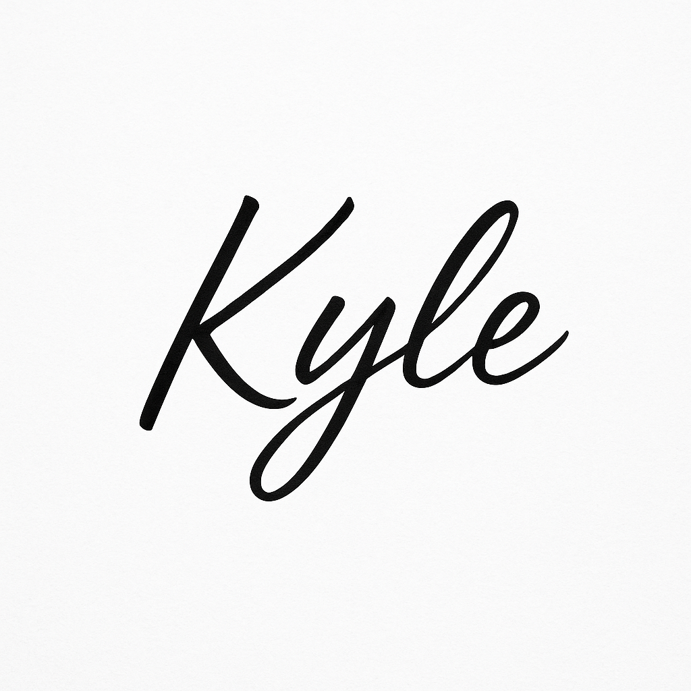

Kyle Portfolio [KIM TAEMIN] 도움말Backend Developer
경력구분: 경력
나이: 남, 1999 (25세)
이메일: rlaxoals9977@gmail.com
연락처: 010-5578-5037
두 차례의 팀 프로젝트에서 팀 리더를 맡아 기획, 개발, 배포를 주도하며 전체 흐름을 조율하는 법을 배웠습니다. 기술적인 핵심은 물론, 팀 내 커뮤니케이션과 일정 관리까지 책임지며 프로젝트를 성공적으로 이끌었습니다.
현재는 회사에서 1인 풀스택 개발자로 일하며 쇼핑몰 플랫폼을 기획부터 개발, 배포, 운영까지 단독으로 수행하고 있습니다. 기술 스택에 국한되지 않고, 제품과 사용자의 흐름을 설계하며 완성도 높은 서비스를 만들어가는 데에 집중하고 있습니다.
이러한 경험은 저를 개발과 기획, 그리고 팀워크의 연결고리를 만드는 사람으로 성장시켰고, 앞으로도 문제를 빠르게 구조화하고, 해결까지 책임지는 개발자로서 기여하고 싶습니다.
핵심 역량:
IT 전문가 매칭 플랫폼
실시간 채팅 기반 소셜 네트워크 서비스
남성 의류 쇼핑몰
개발 전문 커뮤니티 플랫폼
Full Stack Developer & DevOps Engineer
제가 만든 Kyle Portfolio OS에 오신 것을 환영합니다.
단순한 이력서나 리스트가 아닌, 제가 직접 기획하고 개발한 경험들을 담았습니다.
마치 작은 운영체제처럼 작동하는 이 공간에서, 저만의 개발 여정을 탐험해보세요.
기술과 창의성이 어우러진 곳에서 저의 색깔을 느끼실 수 있기를 바랍니다.
help 명령어로 사용 가능한 명령어 확인
ESC 키로 모든 윈도우 닫기
macOS와 Windows의 장점을 결합한 인터페이스
드래그 기능을 갖춘 윈도우 시스템
실제 작동하는 명령어와 탭 자동완성
GitHub API 연동 및 실시간 통계
백준 온라인 저지 API 연동 및 알고리즘 통계
Canvas를 활용한 배경 파티클 시스템
모바일과 데스크톱 모두 지원
Kyle Portfolio OS - Created with passion for web development